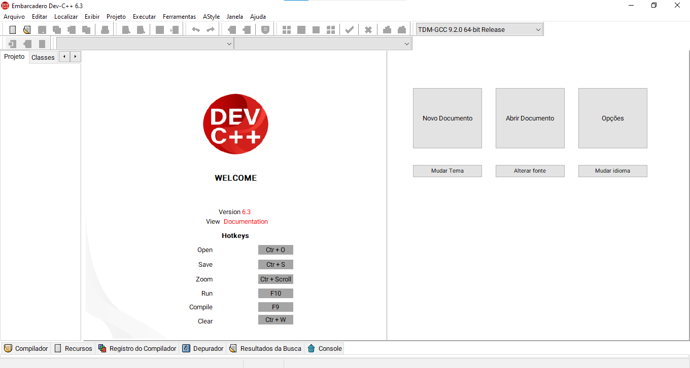
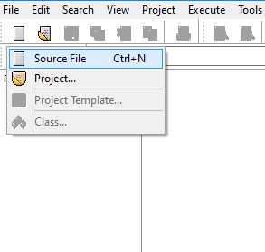
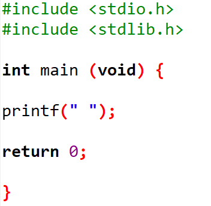

CONCEITO DE LINGUAGEM EM C:
C é uma linguagem de programação compilada, estruturada, imperativa e procedural. Sendo uma linguagem de alto nível que permite entender os processos ocultos que acontecem nas máquinas e chegar mais perto do hardware do computador sem mexer com a linguagem Assembly. É amplamente utilizada em sistemas embarcados e é considerada uma boa linguagem para aprender lógica de programação.
TIPOS DE LINGUAGEM EM C:
Existem três linguagens que frequentemente vêm à discussão devido às suas influências históricas e funcionalidades, são:
- C (conhecida como a mãe de todas as linguagens);
- C++;
- C#.
POR ONDE COMEÇAR A PROGRAMAÇÃO EM C?
PASSO 1:
No seu navegador acesse o link abaixo para fazer o download da IDE, o download será feito automaticamente depois de clicado.
LINKPASSO 2:
Após o download você poderá abrir o aplicativo na tela inicial:
Em seguida abrir um “source file” ou um “new document” (novo documento).
PASSO 3:
Inicie o seu código digitando:
PASSO 4:
Digite alguma coisa entre as " ".
PASSO 5:
Salve o arquivo utilizando Ctrl + S no seu teclado.

PASSO 6:
Após salvar, no mesmo arquivo digite a tecla F11 para abri-lo.